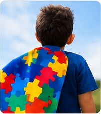
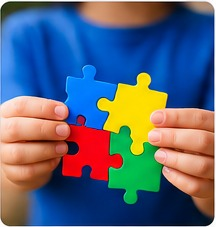
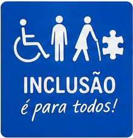

CONSCIENTIZAÇÃO • RESPEITO • INCLUSÃO
Ser diferente faz parte de ser humano.
Conhecer o Transtorno do Espectro Autista é um passo importante para combater o preconceito, respeitar as diferenças e construir uma sociedade mais inclusiva.
Conheça o TEA
INFORMAÇÃO É O PRIMEIRO PASSO
O que é o TEA?
O Transtorno do Espectro Autista (TEA) é uma condição relacionada ao desenvolvimento neurológico. Ele pode influenciar a comunicação, a interação social, o processamento sensorial e os padrões de comportamento.
O autismo se manifesta de maneiras diferentes em cada pessoa. Por isso, cada indivíduo possui características, necessidades e habilidades próprias.
O diagnóstico deve ser realizado por profissionais qualificados. A informação correta ajuda a combater mitos e a garantir respeito aos direitos das pessoas autistas.
Você sabia?
Não existe uma única maneira de ser autista. As experiências e necessidades de apoio variam de pessoa para pessoa.
∞CONHECER PARA RESPEITAR
Características do espectro
Algumas características que podem estar presentes em pessoas autistas:
Comunicação
Diferentes formas de compreender e expressar pensamentos, sentimentos e necessidades.
Interação social
Diferentes maneiras de iniciar conversas, interpretar situações sociais e se relacionar.
Processamento sensorial
Maior ou menor sensibilidade a sons, luzes, cheiros, texturas e outros estímulos.
Interesses e rotinas
Interesses intensos, preferência por previsibilidade e movimentos ou comportamentos repetitivos.
Importante: essas características não aparecem da mesma forma em todas as pessoas autistas e, isoladamente, não confirmam um diagnóstico.
ATITUDES QUE FAZEM A DIFERENÇA
Como podemos promover a inclusão?
Pequenas mudanças de atitude podem contribuir para ambientes mais acolhedores e acessíveis.
| Situação | Atitude inclusiva |
|---|---|
| Comunicação | Respeitar diferentes formas de expressão. |
| Sensibilidade sensorial | Reduzir estímulos excessivos quando possível. |
| Convivência escolar | Combater o bullying e o isolamento. |
| Necessidades individuais | Ouvir a pessoa e respeitar suas preferências. |
| Acessibilidade | Adaptar espaços e atividades conforme necessário. |
APRENDER TAMBÉM É ACOLHER
Conhecimento transforma atitudes
Utilize os recursos abaixo para complementar a conscientização sobre o autismo.

Respeito às diferenças
Cada pessoa tem sua própria maneira de perceber e interagir com o mundo.

Inclusão na prática
A inclusão envolve escuta, acessibilidade, respeito e oportunidades.
Vídeo educativo sobre o TEA
Adicione aqui um vídeo educativo sobre autismo, inclusão ou combate ao preconceito.
Ouça e reflita
Este espaço pode receber uma gravação com uma mensagem de conscientização ou um depoimento autorizado.
Inclusão começa com respeito.
Informe-se, escute as pessoas autistas e ajude a construir um mundo em que todos tenham seus direitos respeitados.
Compartilhe essa ideia